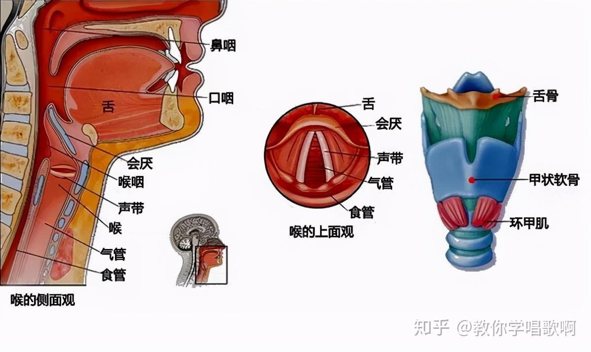

"Let everything that hath breath praise the Lord."
凡有氣息的,都要讚美耶和華 · 詩篇 150:6

FIGURA · 圖譜
喉的側面觀 · 喉的上面觀 · 喉部結構
發聲看似神秘,
其實只是這幾個結構在協調工作。
讓我們順著一股氣流的旅程,從圖中由下而上認識它的路徑——
氣管 → 聲帶 → 喉咽 → 口咽 → 鼻咽 → 嘴
它要經過三個區域,每個區域做一件事:運輸氣流、產生振動、塑造音色。記住這三段,就掌握了發聲的全部骨架,剩下的都是細節。
"The Spirit of God hath made me, and the breath of the Almighty hath given me life." JOB 33:4 · 約伯記
圖上沒有畫肺和橫膈膜,但氣管底下連的就是肺。氣管像一根從肺通向聲帶的風琴管。
唱歌時,橫膈膜下降把氣吸進肺,然後橫膈膜和腹部肌肉控制著氣慢慢往上送,經過氣管沖向聲帶。
關鍵在於:氣管本身只是一根管子,它不發力。真正發力的是橫膈膜和腹肌——是吸氣肌和呼氣肌的對抗。
如果你感覺「喉嚨這裡在用力推氣」,那就是錯的。動力源不在喉嚨,在小腹深處。喉嚨用力,只會卡住聲音的出路。
"I will sing with the spirit, and I will sing with the understanding also." I CORINTHIANS 14:15 · 哥林多前書
看中間那張「喉的上面觀」——這是從嘴巴往下看進喉嚨的視角。中間兩條白色的就是聲帶。
聲帶其實是兩片粘膜包裹著的肌肉,水平地橫在喉的中間。平時呼吸時它們是分開的,讓氣自由通過;說話或唱歌時它們靠攏、輕輕閉合,氣流沖過時產生振動——這就是聲音的源頭。
右邊那張立體圖告訴我們更多細節:
甲狀軟骨(藍色那塊大的,男生喉結就是它)——聲帶就附著在它的內壁上,是聲帶的骨架。
環甲肌(下面紅色那塊)——這塊肌肉一收縮,會把甲狀軟骨往前下方拉,把聲帶拉長、繃緊。這就是你唱高音的物理機制。
舌骨(最上面那塊)——喉部懸掛在它下面,喉的上下位置主要靠它周圍的肌肉控制。
唱高音不是「用力把聲音頂上去」,而是環甲肌讓聲帶變薄變緊(像吉他弦擰緊了音變高)。不知道這個原理的人,會本能地用喉嚨肌肉去擠——那是錯誤的方式。
還有一個小但重要的結構:會厭。圖上標得很清楚,像一個小蓋子。吞咽時它蓋住氣管不讓食物進去,發聲時它要往上抬開、不擋路。會厭僵硬下壓,是很多人「聲音卡卡的」的隱藏原因。
"Make a joyful noise unto the Lord, all ye lands.
Serve the Lord with gladness: come before his presence with singing."
PSALM 100:1–2 · 詩篇
回到左圖,看聲帶上面那一長段空間——這就是聲道(vocal tract)。它被分成三段:
喉咽——聲帶正上方的空間。
口咽——舌頭後面的空間,是最大的共鳴腔。
鼻咽——軟齶後上方通向鼻腔的空間。
聲帶產生的原始聲音其實很單薄、像蜂鳴器一樣。它必須經過這整段管子,才能變成你聽到的豐滿人聲。這段管子的形狀決定了一切音色。
口咽是最關鍵的共鳴腔。看圖上舌頭占了多大的位置——舌頭一動,口咽的形狀就大變。所以舌位是聲樂訓練裡最重要的變量之一。
鼻咽通過軟齶控制開關。軟齶抬起→聲音只走口腔,清亮;軟齶下塌→聲音走鼻腔,變成鼻音。
喉咽的擴張就是聲樂老師說的「打開喉嚨」——靠的是降低喉位、放下舌根、抬起軟齶,把聲帶上方這段空間擴大,讓聲音有更多空間共鳴。
你沒法直接控制「共鳴」,你只能控制聲道的形狀。改變舌位、下巴、軟齶、喉位——共鳴就跟著變。
tight · constricted
聲帶上方(喉咽)這一段被卡緊,舌根壓下來,喉位往上提——聲道入口堵了,人本能用喉部肌肉擠聲帶去補償。
根源聲道沒打開 + 喉部代償
nasal · trapped
軟齶塌下來,聲音全跑鼻咽去了,口咽沒被使用。聲音悶在鼻子裡出不來,捏鼻子時音色明顯改變。
根源軟齶下塌 + 口咽未開
breathy · airy
聲帶閉合不充分(中間那張圖上兩條聲帶沒有靠攏)——氣漏掉了,聲音沒有核心,唱久了沒氣、容易疲勞。
根源聲帶閉合不足
flat · thin
聲道整體沒有擴張,喉位偏高——聲道太短太窄,共振峰偏高,聲音單薄沒有厚度,像在說話而不是唱歌。
根源聲道未擴張 + 喉位過高
不必記住所有解剖名詞,
每個組員只要建立三個意識就夠了。
這三句話覆蓋了氣、聲帶、共鳴三個層次,
對應的就是圖上的下、中、上三段。